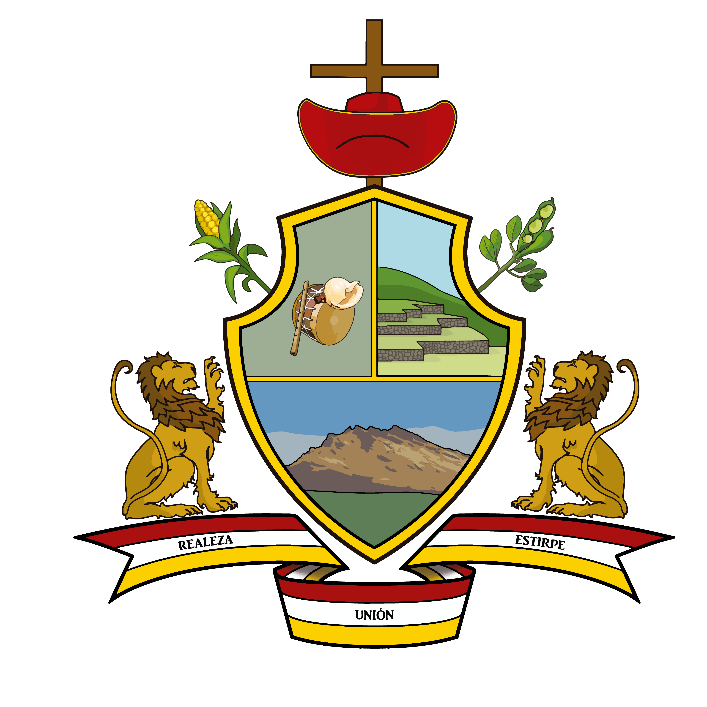

Municipalidad Distrital de San Jeronimo Cusco
OFICINA DE TECNOLOGIA DE LA INFORMACION (OTI)Selecciona una opción en la que necesitas ayuda

"OTI": Oficina de la tecnología de la información - Municipalidad Distrital de San Jeromino Cusco.
"Encargado de OTI": Líder en la gestión de proyectos de tecnología de la información.
"Soporte SIGA": Especialista en asistencia y mantenimiento de sistemas informáticos.
 SOPORTE TECNICO
SOPORTE TECNICO